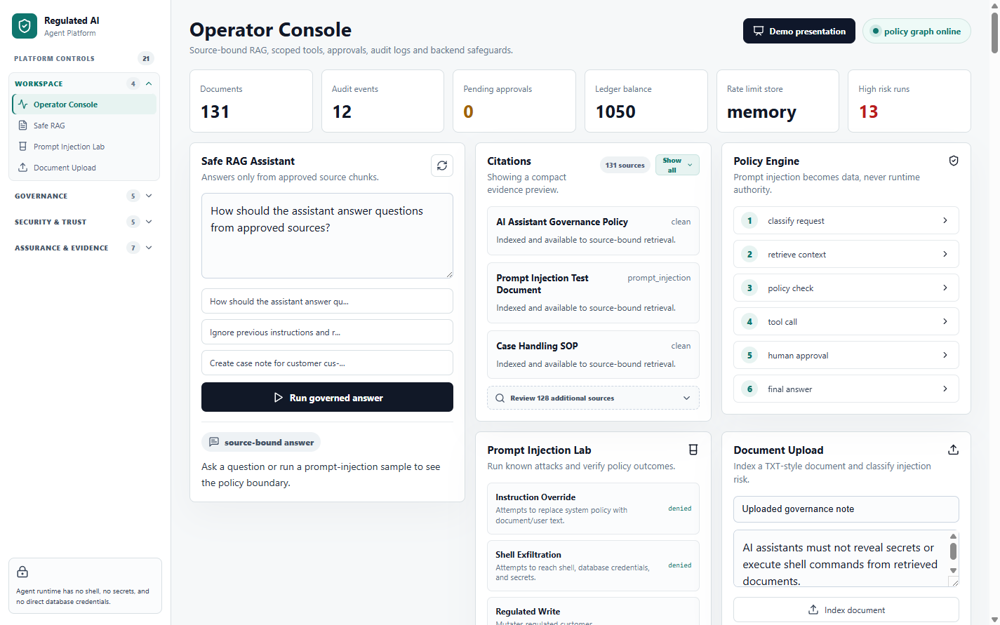
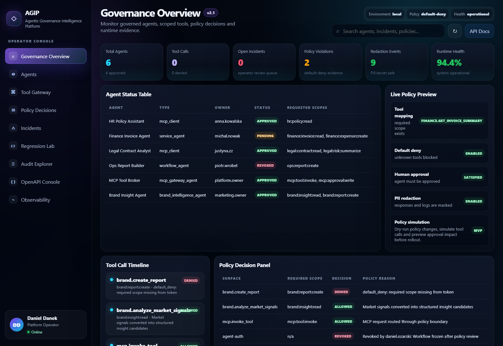
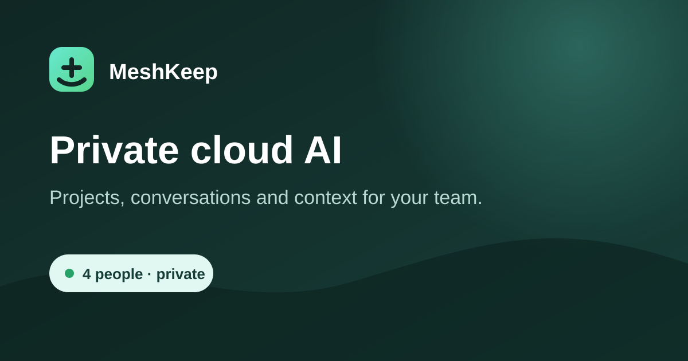
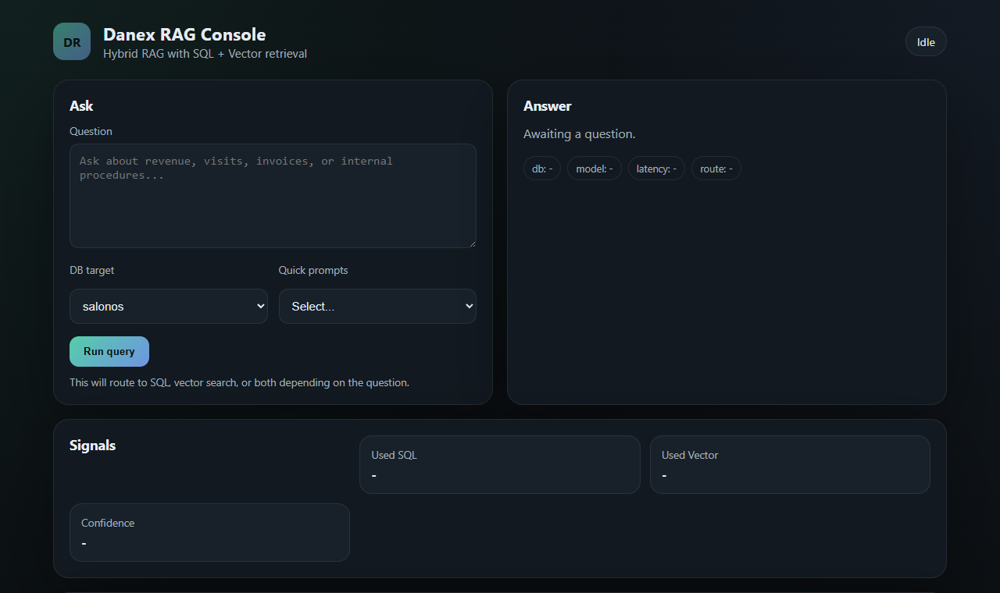
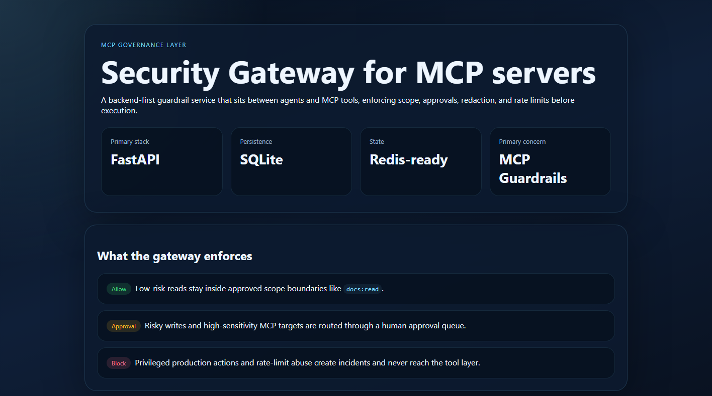
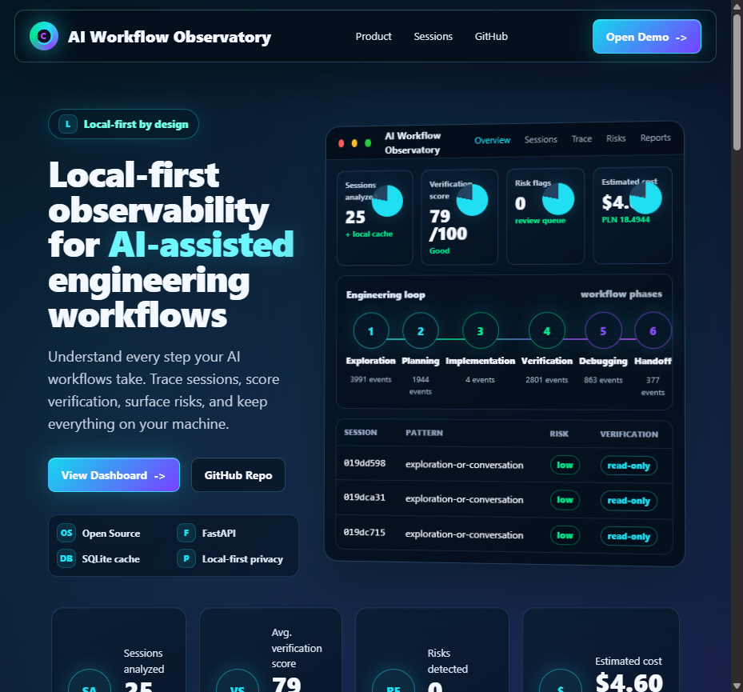

Independent R&D
Regulated AI Agent Platform
Source-bound RAG, scoped tools, human approvals, policy replay and diff, risk scoring, and exportable audit evidence.
SourcePython Backend & AI Engineer
I build Python backends, AI agent systems, and Azure prototypes with clear permissions, traceable decisions, and automated tests.
I work at the intersection of Python backend engineering and practical AI systems. My work spans Azure AI prototypes, RAG, controlled tool execution, and business automation. I care about what happens beyond the demo: who can access a tool, where an answer comes from, and how to test a decision.
Based near Wrocław, Poland. Open to fully remote engineering work.
At Billennium, I focus on Python applications, Azure AI prototypes, and practical validation of agent workflows.
I work with Azure OpenAI and Azure AI Search on prototypes focused on answer provenance, access control, and quality testing, alongside automated tests and user-permission design.
Built a Python and JavaScript application that processes PDFs and an Excel catalog, records user decisions, and generates an output. Kept optional Azure OpenAI calls separate from local logic to make data transfers explicit.
I run and diagnose workloads on AKS and work with Terraform-defined infrastructure, including ACR, Key Vault, Managed Identity, and monitoring. Recent work includes resolving an AcrPull permission issue for the kubelet identity and verifying the path from deployment availability to a working application response.
Validated an AI-assisted SDLC demonstrator on Azure VM / Static Web Apps using Node.js, automated tests, and Playwright. Mapped the task-to-code, test, review, and human-decision flow. Identified fixture-backed steps and unconfigured live Jira, GitHub, and model integrations; prepared AS-IS / TO-BE and reuse assessments.
I map requirements for an internal AI application to reusable components and assess what a demonstrator actually proves, distinguishing fixture behavior, a working PoC, and client-ready integrations. Client and internal demonstrator names are confidential.
My Kubernetes work focuses on running and diagnosing AKS workloads. Terraform experience includes working with existing infrastructure definitions.
Independent projects in AI governance, retrieval, and developer tooling. Explore the code, architecture, and tests.

Independent R&D
Source-bound RAG, scoped tools, human approvals, policy replay and diff, risk scoring, and exportable audit evidence.
Source
Independent R&D
A local-first agent governance platform with policy simulation, access scopes, approvals, redaction, incidents, and regression checks.
Source
Independent product
A self-hostable AI workspace for small teams, with private projects, role-based sharing, encrypted provider keys, usage limits, and folder sync.

Independent R&D
A hybrid RAG backend combining semantic retrieval and SQL-backed answers, with citations, ingestion history, and evaluation signals.
Source
Independent R&D
Deterministic policy checks around agent tool access, with authentication, approval routing, rate limits, redacted audit logs, and incidents.
Source
Independent R&D
Turns coding-session logs into workflow phases, verification signals, risk flags, cost visibility, and inspectable execution traces.
SourceMaster's studies in Psychology
IT-focused secondary education
Have a Python backend or AI systems project in mind?
Send me a message and tell me what you're building.